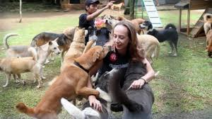
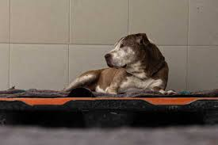
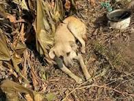
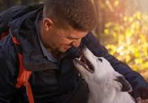

En MUNDO ANIMAL, ofrecemos una variedad de servicios para el bienestar de las mascotas, incluyendo consultas veterinarias, adopciones, y programas de educación sobre el cuidado animal. Nuestro equipo de expertos está comprometido a brindar la mejor atención posible para que tu mascota lleve una vida saludable y feliz.
 Llevamos a cabo rescates de animales en situaciones peligrosas. Por ejemplo, rescatamos a Max, un perro que había caído en una canaleta y no podía salir. Max sufrió varias heridas, pero después de recibir atención médica y mucho cariño, ahora está sano y salvo en su nuevo hogar, donde ha encontrado una familia que lo adora.
 Lily, una gata que fue encontrada abandonada en la calle, llegó a nuestro centro en un estado muy débil y desnutrida. Tras recibir la atención médica necesaria y una dieta adecuada, Lily recuperó su fuerza y vitalidad. Ahora vive felizmente con una nueva familia que la cuida y quiere mucho.
 Estamos comprometidos a encontrar hogares amorosos para los animales rescatados. Tommy, un gatito que fue rescatado de una fábrica abandonada, pasó semanas sin alimento y en condiciones deplorables. Después de recibir cuidados intensivos, Tommy no solo recuperó su salud, sino también su espíritu juguetón. Ahora disfruta de la vida en su nuevo hogar con una familia que lo adora.
 Bella, una perra mayor, había sido abandonada y estaba sufriendo de varias enfermedades debido a la falta de atención médica. Con nosotros, Bella recibió el tratamiento adecuado y, con el tiempo, se recuperó completamente. Ahora, Bella ha encontrado su hogar para siempre con una familia que la adora y cuida de ella todos los días.
condorigabriela1702@gnail.com
+109 68140210
calle pascoe.Av 16 de julio